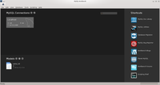
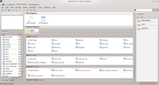
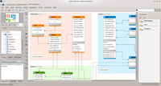
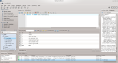
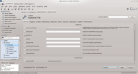

MySQL Workbench
Dieser Artikel wurde für die folgenden Ubuntu-Versionen getestet:
Ubuntu 16.04 Xenial Xerus
Ubuntu 14.04 Trusty Tahr
Zum Verständnis dieses Artikels sind folgende Seiten hilfreich:
MySQL-Workbench  ist ein Modellierungswerkzeug für Datenbanken und hilft bei deren Planung und Wartung. Das Tool gilt als Nachfolger des DBDesigners4 und so können alte Modelle aus diesem in MySQL Workbench importiert werden. Auf der Download-Seite von MySQL ist als Ubuntu-Paket die stabile Version 6.1 erhältlich.
ist ein Modellierungswerkzeug für Datenbanken und hilft bei deren Planung und Wartung. Das Tool gilt als Nachfolger des DBDesigners4 und so können alte Modelle aus diesem in MySQL Workbench importiert werden. Auf der Download-Seite von MySQL ist als Ubuntu-Paket die stabile Version 6.1 erhältlich.
Installation¶
Ab Ubuntu 12.04 befindet sich MySQL Workbench in den offiziellen Paketquellen und kann einfach über das Paket
mysql-workbench (universe)
 mit apturl
mit apturl
Paketliste zum Kopieren:
sudo apt-get install mysql-workbench
sudo aptitude install mysql-workbench
installiert werden [4].
Das Programm ist unter folgenden Desktop-Umgebungen an genannten Stellen zu finden:
Unter GNOME und KDE Plasma befindet sich der Menüpunkt unter "Entwicklung -> MySQL Workbench".
Hinweis:
Die folgenden Abschnitte beziehen sich auf die Version 6.0 von MySQL Workbench, welche in den Paket-Quellen von Ubuntu 14.04 vorliegt. Sowohl die neuere von der MySQL-Homepage herunterladbare Version als auch die ältere aus den Paketquellen von Ubuntu 12.04 zu beziehende Version unterscheiden sich zum Teil erheblich im Aufbau der grafischen Oberfläche. Auch bei der Funktionalität kann es geringfügige Unterschiede geben.
Übersicht der Funktionen¶
Grob lassen sich die Funktionen der MySQL Workbench in zwei Bereiche unterteilen: Einerseits gibt es die Daten-Planung und -Modellierung, bei der lokal eine Projekt-Datei, ein sogenanntes Modell, erstellt wird, in der die Struktur einer Datenbank (im MySQL-Jargon auch "Schema" genannt; diese beiden Begriffe werden bei MySQL synonym verwendet) abgebildet wird. Diese Funktionen lassen sich vollständig ohne einen vorhandenen MySQL-Server nutzen. Andererseits gibt es die Wartung und Administration eines vorhandenen MySQL-Servers. Dabei kann die Konfiguration des Servers geändert werden und es besteht Zugriff auf die Schemata dieses Servers. So lassen sich dort vorhandene Schema-Elemente wie Tabellen, Routinen oder Views anzeigen oder ändern.
Diese beiden Bereiche lassen sich auch kombinieren, indem offline ein Schema erstellt oder angepasst wird. Danach kann man diese Änderungen dann bspw. zuerst auf ein lokal installiertes Test-System anwenden um sie dann bei Erfolg auch auf einem Produktiv-System einzusetzen.
Datenmodellierung (Menü-Punkt "Models")¶
 
Der erste Einsatzbereich dieser Software ist die Modellierung von Schemata. Die Gesamtheit von Schema-Objekten (dem Schema selbst, den Tabellen, den Routinen und den Views) wird als "Modell" bezeichnet. Das linke Bild zeigt die Startseite der Workbench, rechts ist die Ansicht eines Beispiel-Schemas zu sehen.
Schema¶
Das Schema ist das zentrale Objekt eines MySQL-Modells. Im Schema werden einige Standard-Werte für die enthaltenen Objekte definiert. Ein Schema wird durch einen eindeutigen und daher aussagekräftig zu wählenden Namen identifiziert.
Weiterhin wird im Schema der Standard-Zeichensatz (engl. "Charset") für alle enthaltenen Schema-Objekte angegeben. Dieser gilt, solange bei den Objekten nicht explizit ein anderer Zeichensatz angegeben wird. Mit dem Zeichensatz wird definiert wie Zeichen beim Speichern von Text gespeichert werden.
Zuletzt kann für ein Schema ein Kommentar angegeben werden, um auf den Zweck dieses Schema hinzuweisen.
Tabellen¶
Der häufigste Grund für das Anlegen einer Datenbank sind die Tabellen. In der Theorie der relationalen Datenbanken werden diese auch "Relationen" genannt. In der Praxis wird dieser Begriff nur selten verwendet.
Tabellen geben die Struktur vor, in welcher Daten im Schema gespeichert werden. Allgemein definieren sich Tabellen durch einen innerhalb des Schemas eindeutigen Namen sowie die Tabellen-Spalten. Zusätzlich können in MySQL hier noch ein eventuell vom Standard-Zeichensatz des Schemas abweichender Tabellen-Zeichensatz, die zu verwendende Storage Engine sowie ein Kommentar zur Tabelle angegeben werden.
Als weitere Funktion können Verbindungen zwischen den Tabellen definiert werden, indem Fremdschlüssel (engl. Foreign Keys) eingefügt werden. Genauso ist es möglich, weitere Indizes zu erstellen. Sollten Trigger benötigt werden, so können auch diese problemlos in der Tabellendefinition eingefügt werden. Dazu ist jedoch detaillierteres Wissen über SQL erforderlich, da die Trigger nur als SQL-Anweisung eingetragen werden können. Sollte man eine DB-Engine verwenden, die eine Partitionierung ermöglicht, so ist auch diese hier konfigurierbar. Ebenso ist die Möglichkeit gegeben, zusätzliche Einstellungen für diese Tabelle vorzunehmen.
Sollte es nötig sein, einer erstellten Tabelle bereits vor der ersten Nutzung Einträge hinzuzufügen, so ist es möglich, diese Einträge zusätzlich im Modell zu speichern.
Bei importierten Schemas, die aus einem bestehenden Modell importiert worden sind, können auch eventuelle Berechtigungen, die auf die Tabelle selbst definiert sind, bearbeitet werden.
Views¶
MySQL unterstützt Views (="Ansichten" auf ausgewählte Daten) – auch diese können hier in Form von SQL-Anweisungen definiert werden. Auch hier können wieder zusätzlich zu Namen und SQL-Anweisung weitere Kommentare und im Schema vorhandene Berechtigungen definiert und bearbeitet werden.
Routinen¶
In MySQL besteht die Möglichkeit Gespeicherte Prozeduren (engl. "Stored Procedures") und benutzerdefinierte Funktionen (engl. "User defined Functions") anzulegen. In MySQL Workbench werden diese unter den "Routinen" zusammengefasst. Hier besteht die Möglichkeit diese anzulegen und die im Schema definierten Benutzer und Berechtigungen auf die einzelnen Routinen anzupassen.
Routine-Gruppen¶
Zur besseren Übersicht können die Routinen in Gruppen zusammengefasst werden. Vorhandene Funktionen können dann per Drag & Drop in die Gruppe eingefügt oder auch direkt in das SQL-Fenster, das sich im zweiten Reiter befindet, eingetragen werden.
Schema-Privilegien¶
In den Schema-Privilegien können die Benutzer, von denen die erstellte DB geöffnet oder bearbeitet werden können soll, definiert werden und ihnen Zugriffsrechte zugewiesen werden. Diese Zugriffsrechte können dann über die Rollen definiert werden, die den Benutzern zugeordnet werden, um eine Struktur zu definieren.
SQL-Skripte¶
Bei einer Applikation, die sich weiter entwickelt, kommt es vor, dass sich die Daten-Struktur ändert und das Schema bzw. deren Tabellen, Views, Funktionen und Trigger angepasst bzw. geändert werden müssen. Der Bereich SQL-Skripte ist dafür geeignet, die entsprechenden Update-Scripte zu verwalten: Dort kann man komplette SQL-Skripte als Objekte ablegen und diese so übersichtlich verwalten.
Modell-Bemerkungen¶
Um umfangreiche Notizen zu den einzelnen Bereichen zu verwalten, gibt es einen weiteren Bereich des Programms. Dieser bietet die Möglichkeit der Dokumentation der Struktur an zentraler Stelle.

ER-Diagramme¶
Entity-Relationship-Diagramme sind häufig der erste Punkt einer Datenbank-Modellierung. Sie sind hilfreich bei einem Problem, das DB-Designern häufig sehr vertraut ist: Dem Verlust der Übersicht über eine komplexe Datenbankstruktur mit multiplen Fremdschlüssel-Regeln. Das ER-Diagramm ist zur Lösung dieses Problems hilfreich, da man in diesem seine Schema-Struktur quasi zeichnen kann und somit Zusammenhänge zwischen einzelnen Tabellen graphisch dargestellt werden. Um dies auch in der MySQL Workbench zu ermöglichen, kann man im oberen Arbeitsbereich ein Diagramm anlegen, in dem die einzelnen Tabellen frei angeordnet werden können. Es ist hier auch die Möglichkeit vorhanden, Relationen zu definieren. Dies erlaubt eine bessere Übersicht über die Tabellenverknüpfungen.
SQL-Development / Server-Administration (Menü-Punkt "MySQL Connections")¶
Dieser Einsatzbereich von MySQL Workbench wird dazu benutzt, eine Verbindung zu einem MySQL-Server aufzubauen um den Server zu administrieren oder Wartungen an den Schemata auf diesem Server vorzunehmen.
Arten der Verbindung¶
Es gibt drei Arten, wie eine Verbindung zu einem Server aufgebaut werden kann.
TCP/IP¶
Der gebräuchlichste Weg ist wohl eine TCP/IP-Verbindung, da der Server meist nicht auf dem lokalen Rechner liegt.
Achtung!
Sollte sich der Server außerhalb ihres eigenen Netzwerkes befinden, so sollte möglichst eine verschlüsselte Verbindung genutzt werden. Die einfachste Alternative dazu ist der nächsten Punkt, TCP/IP over SSH. Eine weitere Möglichkeit wäre die Nutzung von SSL, um die Verbindung abzusichern.
TCP/IP over SSH¶
Als Alternative zu einer normalen TCP/IP-Verbindung kann die Verbindung über einen SSH-Zugang getunnelt werden; dies gewährleistet ein höheres Maß an Sicherheit. Zu beachten ist hierbei jedoch, dass der Hostname des MySQL-Servers immer Localhost/127.0.0.1 sein muss, wenn sich der "MySQL-Server" auf dem selben System wie der "SSH-Server" befindet.
Socket/Pipe¶
Die dritte Art der Verbindung sind die im Linux-Bereich sehr verbreiteten Sockets. Diese Möglichkeit der Verbindung ist nur verfügbar, wenn sich der Server auf dem selben Rechner befindet, auf dem Workbench ausführt wird. Um die Verbindung zu öffnen, wählt man das Socket-File aus, das sich normalerweise (d.h. wenn die Einstellung in der Konfigurationsdatei nicht verändert wurde) unter /var/run/mysqld/mysqld.sock findet.
Kombinierter Entwicklungs- und Administrations-Bereich¶
 Nachdem man eine Verbindung erstellt und diese geöffnet hat, erscheint in MySQL Workbench ein weiterer Reiter. Der linke Bereich erlaubt nun die Navigation durch die Möglichkeiten, mit dem Server zu interagieren: So können im oberen Bereich Optionen zu Administration und Wartung des MySQL-Servers ausgewählt werden, während im unteren Bereich die Schemata des Servers und dessen Objekte aufgelistet werden. Die Kontextmenüs zu diesen bieten die unterschiedlichen Möglichkeiten, die Elemente im SQL-Editor zu benutzen oder diese zu modifizieren.
SQL-Editor¶
Optisch zentraler Bestandteil dieses Programmteils ist der oben bereits erwähnte SQL-Editor, in dem SQL-Anweisungen geschrieben und anschließend auf dem Server ausgeführt werden können.
Hinweis:
Bei Benutzung des Editors ist darauf zu achten, dass die Tabellen, Views, o.ä. immer als Schemaname.Objektname angegeben werden, da das aktive Schema nicht ausgewählt ist.
Alternativ dazu verwendet man vor solchen Anwesiungen use Schemaname;, um dieses Problem zu umgehen oder wählt im Kontextmenü des jeweiligen Schemas die Option "Set as Default Schema".
SQL-Snippets / Kontextsensitive Hilfe¶
Der rechte Bereich des Programmteils dient der einfacheren Bedienung des SQL-Editors. Im ersten Reiter wird eine kontextsensitive Hilfe angeboten. Diese zeigt einem immer die Syntax des SQL-Anweisungen, auf der Cursor im SQL-Editor steht. Der zweite Reiter bietet die Möglichkeit häufig benötigte Teile von oder auch vollständige SQL-Anweisungen als Snippet zu speichern, um sie nicht immer wieder manuell eintippen zu müssen. Es können sowohl einige vorgefertigte als auch über den entsprechenden Button selbst angelegte Snippets mittels Kontextmenü in den SQL-Editor eingefügt werden.
Server-Administration¶
 Das Menü zur Administration von MySQL-Server bietet Werkzeuge zur Konfigurationsänderung, Benutzerverwaltung, Im- und Export von Schemata sowie zur Prüfung des aktuellen Serverstatus
Server-Status¶
Hier werden diverse Statusinformationen zum verbundenen MySQL-Server angezeigt. Dazu gehören Stati zu Server-Funktionen, Anzeige von Logging-Funktionen und den verwendeten Verzeichnissen, Replikations-, Authentifizierungs- und SSL-Stati sowie Statistiken zur Benutzung des Servers (Traffic, Abfragen pro Sekunde) und zur Effizienz der angelegten Indizes und Caches.
Client-Connections¶
In dieser Auflistung werden alle Verbindungen von Clients zum MySQL-Server inklusive der eventuell laufenden Abfragen angezeigt. Weiterhin besteht die Möglichkeit laufende Abfragen abzubrechen oder sogar ganze Verbindungen zu trennen.
Users and Privileges¶
Dieser Bereich dient zur Verwaltung der Benutzer des MySQL-Servers sowie deren Berechtigungen auf dem Server sowie den einzelnen Schemata.
Im linken Bereich befindet sich die Übersicht über die vorhandenen Accounts. Rechts daneben erscheinen bei einem ausgewählten Account der Login-Name und der Host, von dem aus eine Verbindung aufgebaut werden darf. Über weitere Reiter können dann die "Account-Limits", d.h. Verbindungs- und Abfrageeinschränkungen, und die "Administrative Roles" verwaltet werden. Die administrativen Rollen sind vordefinierte Berechtigungsschemata, die für jeden Benutzer einzeln eingestellt werden können. Es werden dann im rechten Bereich der Anzeige die für den Benutzer momentan zugeordneten Privilegien angezeigt, in der Mitte befinden sich die Rollen und zudem ist erkennbar, welche davon dem Benutzer zugeordnet sind.
Im letzten Reiter nach der Auswahl eines bestimmten Benutzers können "Schema Privileges"definiert werden, also Berechtigungen auf bestimmte Schemata: Über zwei Buttons am obere rechten Rand des Reiters können die Einträge erstellt oder gelöscht werden. Das Bearbeiten ist einfach möglich, indem die Einträge selektiert werden und danach die Änderungen im darunter liegenden Bereich ausgeführt und mit dem Bestätigungsbutton in der unteren rechten Ecke bestätigt werden.
Status and System Variables¶
Um auch in die tieferen Schichten des MySQL-Servers blicken zu können, bekommt man hier eine Übersicht über die gesamten Variablen, die der Server intern verwaltet. Zur besseren Übersicht ist es auch möglich, nur einzelne Bereiche zu betrachten. Bei den meisten Variablen ist ebenfalls eine Beschreibung mit angegeben, um jedem die Bedeutung der Variablen zu vermitteln bzw. das Verständnis des Inhaltes zu erleichtern.
Data Export und Data Import/Restore¶
In diesen Menüs können Backups der Schemata in Form von Datenbankdumps erstellt oder wieder eingespielt werden. Dabei kann zwischen dem erstellen bzw. wiederherstellen einer einzelnen Dump-Datei oder dem Speichern oder einlesen mehrerer Dateien in einem Verzeichnis gewählt werden. Beim Backup können zusätzlich weitere Option wie das Einschließen der Routinen ins Backup oder das Auslassen der Daten beim Backup (um nur ein Backup der Schema-Struktur zu erhalten) gewählt werden.
Startup/Shutdown¶
In diesem Bereich kann der verbundene MySQL-Dienst gestoppt oder gestartet werden. Zusätzlich werden die für den Start und den Stop des Dienstes relevanten Einträge aus den Logdateien mit angezeigt.
Server Logs¶
Um die Logdateien des MySQL-Servers über MySQL Workbench betrachten zu können, muss im linken Menü der Punkt "Server Logs" gewählt werden. Dabei können alle im MySQL-Server aktivierten Logdateien eingesehen und seitenweise betrachtet werden.
Options File¶
In diesem Bereich können alle Optionen, die in der Konfigurationsdatei von MySQL einstellbar sind, angepasst werden. Durch die SSH-Verbindung werden alle Änderungen, die hier vorgenommen werden, in der Konfigurationsdatei des Servers gespeichert – es gibt hier also eine übersichtliche Möglichkeit, den MySQL-Server an die eigenen Bedürfnisse anzupassen und sich einfach in die Konfiguration des Servers einarbeiten zu können.
Hinweis:
Erfahrene Anwender sollten die Einstellungen selbst in der Konfigurationsdatei vornehmen, um Probleme und mögliche Fehler im Programm zu vermeiden. Die Konfigurationsdatei befindet sich im Normalfall unter /etc/mysql/my.cnf .
Import/Export¶
Um vorhandene Schemata oder Modelle weiter verwenden zu können, sind Im- und Export-Funktionen nötig.
Import¶
Die erste Möglichkeit eines Imports besteht im importieren von alten DBDesigner4-Modellen. Diese Möglichkeit besteht nur, wenn ein leeres Modell angelegt wird, und man über "File -> Import" die Option "Import DBDesigner4 Model" wählt.
Die zweite Möglichkeit ist, über die Startseite von MySQL Workbench in der "Models"-Sektion über das Pfeil-Icon mit der Option "Create EER Model from Database" ein vorhandenes Schema von einem laufenden MySQL-Server zu importieren.
Als dritte Möglichkeit kann ein "Create-Script" genutzt werden, das allerdings bereits in einer SQL-Datei vorhanden sein muss: Aus den Anweisungen in dieser Datei kann MySQL Workbench ebenfalls ein ER-Modell generieren. Diese Möglichkeit besteht sowohl auf der Startseite von MySQL Workbench als auch über das "File -> Import"-Menü.
Export¶
Es gibt diverse Möglichkeiten in einem Modell erstellte Schema-Objekte oder das komplette Schema zu exportieren, um es in anderen Umgebungen wiederzuverwenden.
Die einfachste Art des Exports findet sich im Kontext-Menu sowohl bei der Datenmodellierung als auch im SQL-Entwicklungsbereich: Mit einem Klick der rechten Maustaste  kann die SQL-Anweisung zum Erstellen der Tabelle in die Zwischenablage eingefügt werden. Ebenso ist es möglich, den SQL-Quelltext zum Einfügen der Standard-Inhalte in den Zwischenspeicher einzufügen.
kann die SQL-Anweisung zum Erstellen der Tabelle in die Zwischenablage eingefügt werden. Ebenso ist es möglich, den SQL-Quelltext zum Einfügen der Standard-Inhalte in den Zwischenspeicher einzufügen.
Soll das gesamte Schema erstellt werden, ohne jeweils einzelne Tabellen in die Zwischenablage kopieren zu müssen, kann unter "File -> Export -> Forward Engineer SQL CREATE Script" eine SQL-Datei mit den nötigen SQL-Anweisungen generiert werden. Änderungen an diesem Code können dann über zwei Varianten erkannt und exportiert werden.
Weiterhin kann das aktive Modell über den Menüpunkt "Database -> Synchronize Model" mit einem Schema auf einem laufenden MySQL-Server abgeglichen werden. Oder es können über den Menüpunkt "Database -> Synchronize with any Source" sowohl laufende Schemata, MySQL Workbench-Modells als auch "CREATE"-Scripte mit jeweils anderen Quellen der gleichen Kategorien abgeglichen werden um die Änderungen direkt in laufende Datenbanken oder in "ALTER"-Scripte zu exportieren.
Schließlich kann noch das EER-Diagramm exportiert werden. Das ist in 4 Formaten möglich: "PNG", "SVG", "Single-Page PDF" und "Single-Page PostScript". Entsprechende Menü-Punkte sind unter "File -> Export" zu finden.
MySQL Workbench und MariaDB¶
MySQL Workbench kann auch zur Wartung und Administration von MariaDB-Servern verwendet werden.

- Erstellt mit Inyoka
-
 2004 – 2017 ubuntuusers.de • Einige Rechte vorbehalten
2004 – 2017 ubuntuusers.de • Einige Rechte vorbehalten
Lizenz • Kontakt • Datenschutz • Impressum • Serverstatus -
Serverhousing gespendet von